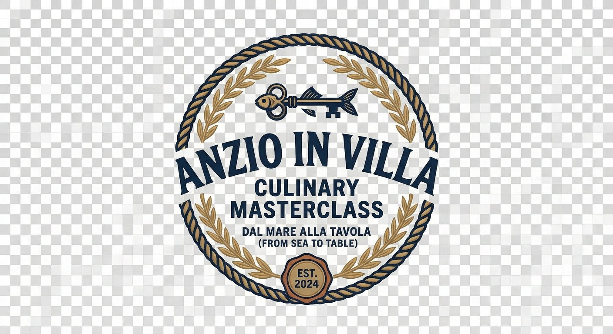
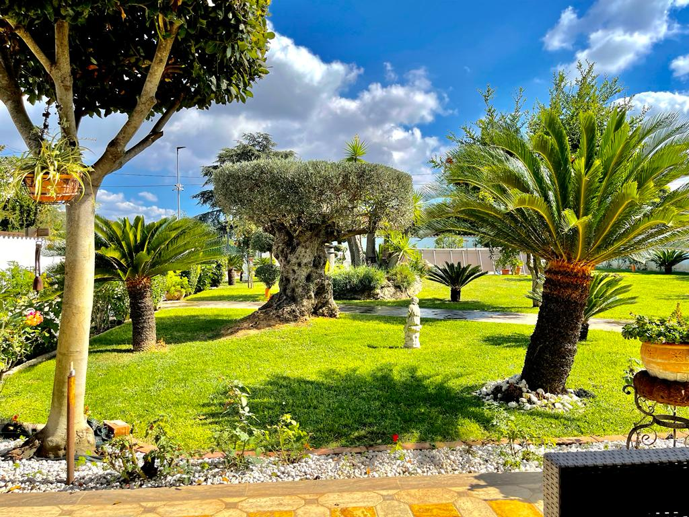
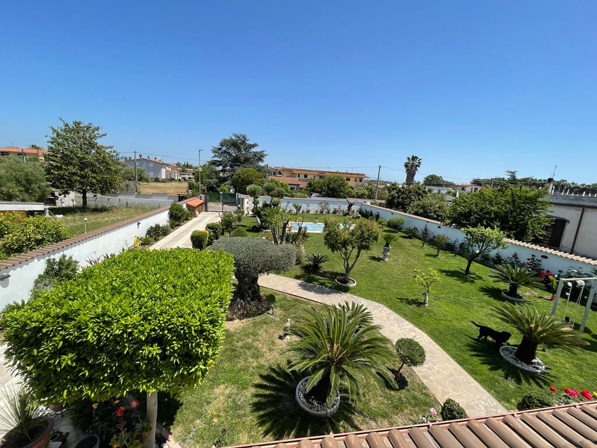
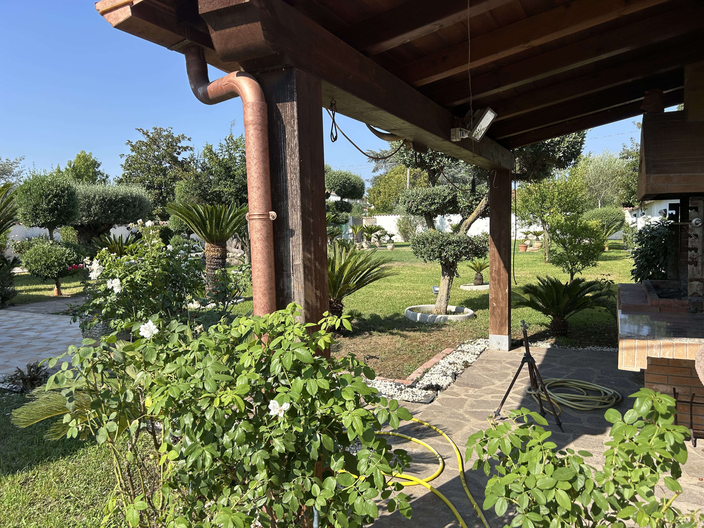

Culinary Arts & Masterclass
Impara le tecniche di sfilettatura e cottura guidato da uno Chef esperto nell'atmosfera riservata della nostra villa con parco privato.
Pescato del giorno selezionato direttamente al porto di Anzio per garantire qualità e tradizione.
Corso pratico "hands-on" di 3 ore seguito da una cena conviviale completa con vini locali.
Un gruppo ristretto per permettere a tutti di cucinare attivamente a fianco dello Chef.
Immersa nel verde con parco privato, olivi secolari, cicas e ampi portici allestiti per l'accoglienza.



Le masterclass si svolgono in date selezionate per un massimo di 8-10 partecipanti. Contattaci direttamente su WhatsApp per verificare le prossime disponibilità.
Contatta lo Staff via WhatsApp